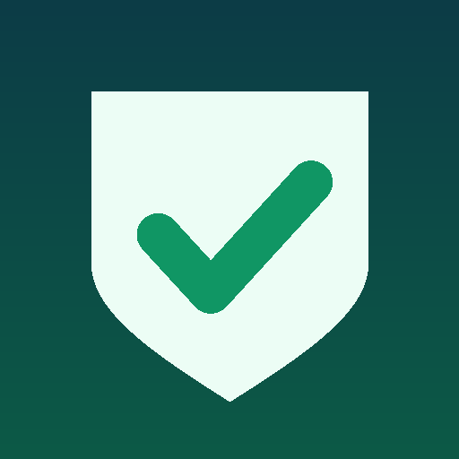

درع العفّة: حاجب المحتوى غير اللائق، مجاناً
تطبيق أندرويد مجاني ومفتوح المصدر يساعدك على غض البصر وحماية قلبك وأسرتك. بلا إعلانات، بلا اشتراك، وبلا إنترنت.
⬇️ تحميل التطبيق مجاناً🛡️ ماذا يحجب؟
- المواقع والكلمات غير اللائقة في كل التطبيقات والمتصفحات، بأكثر من 500 كلمة وبـ12 لغة.
- ريلز إنستغرام وفيسبوك وشورتس يوتيوب.
- التصفح المتخفي، والإشعارات غير اللائقة، والتطبيقات التي تختارها.
🔒 لا يُكسر في لحظة الضعف
- الوضع الصارم: الإيقاف فقط بعد انتظار 24 ساعة.
- حماية من الحذف، وحماية لإعدادات DNS والـVPN.
- زر «أشعر بالضعف الآن»: تنفّس، وأسبابك، واتصال بصديق، وقفل كامل.
🔐 خصوصيتك أولاً
لا يملك التطبيق إذن الإنترنت إطلاقاً، ولا يجمع أي بيانات. سياسة الخصوصية